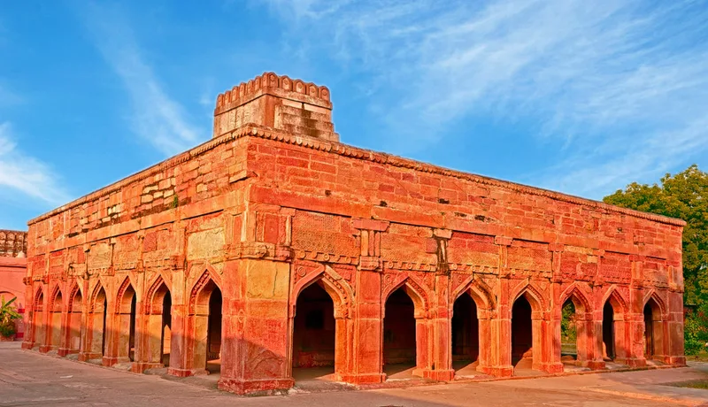
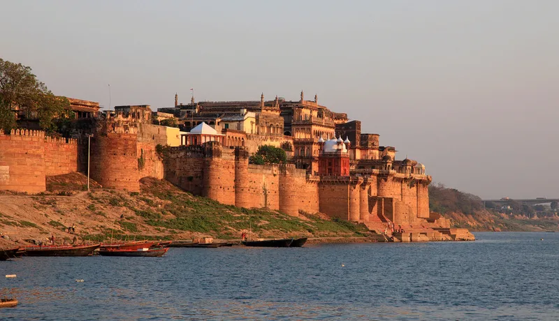
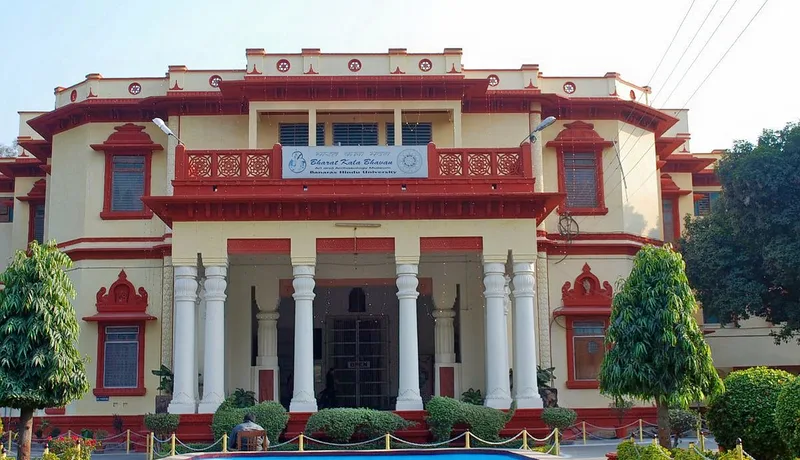
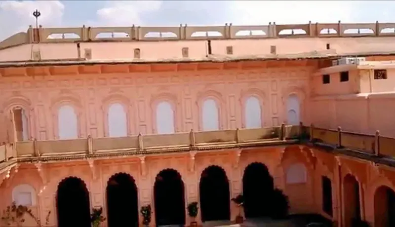
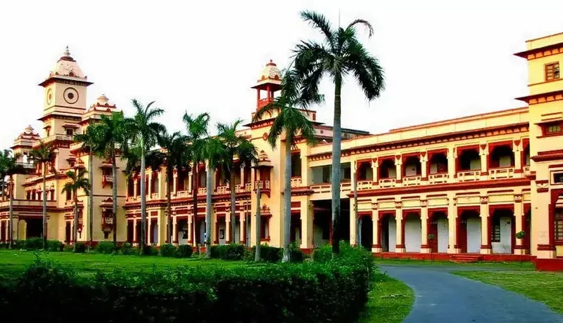
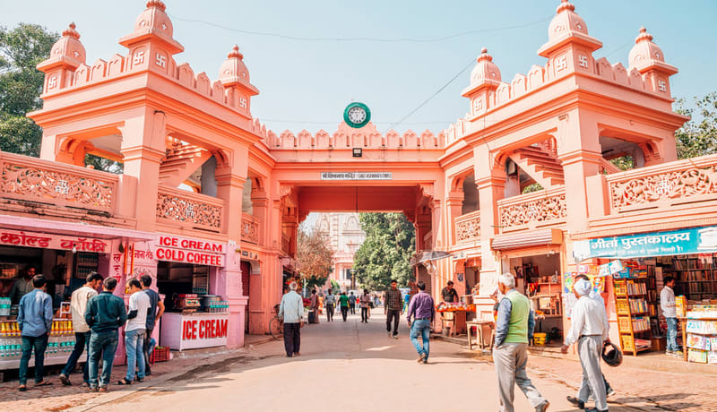
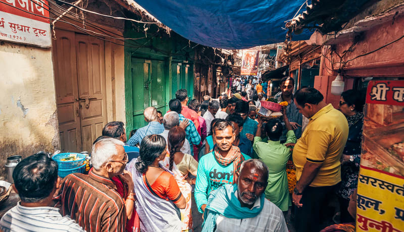
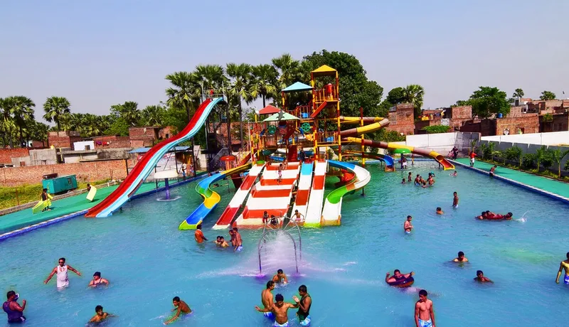

OTHER KNOWLEDGEABLE & AMUSING PLACES
Varanasi is easily accessible from all parts of the country. Very well connected by road, rail and air, the City offers convenient and comfortable travelling options to and from other cities of India.
1. CHUNAR FORT
This is a small fort located on the little diversion between Varanasi and Prayagraj, and it has played a significant role in shaping the history of India. The fort is situated on the banks of river Ganga and is also called Tilismi Quila or Magical Fort because it was featured in the novel “Chandrakanta”.
Some of the most popular movies, like Gangs of wasseypur were also shot here. The Fort has witnessed the reign of several dynasties such as the Mauryans, Gupta dynasty of the Mughals, etc. Chunar Fort is also known for stone trading as it is located in Kaimur Hills, which is the only place in this region that is known to produce good quality stones.
Distance from Varanasi: 32 Km
Best Time to Visit: Anytime between 9 a.m. to 5 p.m.
2. RAMNAGAR FORT & MUSEUM
Resting near the quiet shores of River Ganges is the majestic historical monument of Ramnagar Fort. Chunar sandstone forms the foundation of this creamy colored structure, which was built as the residential fort of Raja Balwant Singh. Even today, it houses the present Maharaja of Varanasi, whose residential quarters are separated from the rest of the fort. Two temples worshipping Lord Hanuman and Veda Vyasa are present inside the complex.
Verdant gardens, fountains, elaborate halls, carved balconies, and decorated courtyards mark the beautiful features of its Mughal architecture. The Durbar Hall was converted into a museum which is now known as Saraswati Bhawan. The museum houses an intriguing collection like an armory, vintage cars, royal palanquins, and multicolored murals of Maharajas. Situated opposite the Tulsi Ghat, Ramnagar Fort is one of the best places to visit in Varanasi and can be accessed by pontoons.
Distance from Varanasi: 14 Km
Best Time to Visit: October to March, during the festivals of Raj Mangal and Dussehra
3. BHARAT KALA BHAWAN MUSEUM
This is a renowned university museum that has been an instrumental figure in disseminating the knowledge of the rich art and culture of India. It is located in Banaras Hindu University and is touted to be one of the most important tourist attractions in Varanasi. The museum exhibits a splendid collection of jewelry, artifacts, sculptures, paintings, and pottery items. This museum is interspersed into two floors, and it has a temporary exhibition center at the entrance.
The museum houses more than one lakh objects consisting of miniature paintings, prehistoric Harappan materials, coins, seal, terracotta, literary works, archival documents, arms, etc. Some of the rare collections in this museum are Ram-Siya coins from the reign of Akbar, a wine cup from Jahangir’s era, and a Ferman of Aurangzeb. It also consists of a seminar hall and a research library that has a separate entrance.
Distance from Varanasi: 8.4 Km
Best Time to Visit: Evening
4. MAN MANDIR OBSERVATORY
An outing to the revered Man Mandir Ghat is incomplete without a quick visit to the Man Mandir observatory. Commonly known as Jantar Mantar of Varanasi, it was built under the supervision of Maharaja Jai Singh, the king of Jaipur. His innate thirst for science led to the construction of this observatory, which is noticeably similar to a few observatories around the country with the same name.
This scientific marvel was created to observe the different positions of sun, stars, planets, and other celestial bodies concerning time and eclipses. The observatory is full of innumerable pieces of equipment used to record the speed and motion of such celestial bodies.
Distance from Varanasi: 5.3 Km
Best Time to Visit: All Year
5. BANARAS HINDU UNIVERSITY
This is known to be one of the largest residential universities in Asia that serves as a knowledge hub for the students hailing from different parts of the world. It has world-class infrastructure and the best educational facilities, and it is counted as one of the best universities in India. It was established by Madan Mohan Malaviya and Annie Besant and had been functioning since the year 1919.
The main campus spreads over 1300 acres of land, and more than thirteen thousand students reside on the campus. It is organized into 14 streams, more than one thirty-two departments, and six institutes. Every year an entrance exam is conducted by the university, and those who clear the test are allowed to take admission here.
Distance from Varanasi: 7.1 Km
Best Time to Visit: Anytime except at night
6. GODOWLIA MARKET
The favorite stop of shopaholics visiting Varanasi is the bustling lanes of Godowlia Market. Stretching at a distance of about 3 km, this market is present in the vicinity of Shri Kashi Vishwanath Temple and is one of the oldest local bazaars of the city. With old buildings forming the boundaries of its lanes, the narrow street is lined with shops and stalls of local vendors selling all kinds of commodities. Frequented by locals who visit the market to purchase groceries, hardware, and household items, this market is famous for its silk embroidery.
From Bhadohi carpets and zari work to wooden carvings and fine silk fabrics, high-quality goods are sold at reasonable prices. Skilled craftsmen also sell their exquisite handicrafts that work as excellent decoration items. You can also buy beads, bracelets, shoes, shawls, and jewelry. Not only is it the perfect place to purchase traditional items, but it is also a nice place to acquaint yourself with daily city life and culture.
Distance from Varanasi: 5.6 Km
Best Time to Visit: October to March
7. CHOWK & VISHWANATH GALI
Another beloved stop of shopping lovers is the crowded market of Vishwanath Gali. Packed with excited tourists and localities, this market is smaller compared to Godowlia Market but has a wide variety to satisfy its customers. From tailored and readymade fabrics to wooden handicrafts, you can find anything and everything over here.
The sweet aroma of delectable dishes fills the lanes as you walk through the street, admiring the multihued fabrics at display in the stalls. Banarasi sarees, designer carpets, embroidered shawls, funky jewelry, and classic accessories are bought in huge numbers by travelers visiting Vishwanath Gali. Looking at the metal and wooden effigies of Hindu deities, you cannot help but admire the talent possessed by the local craftsmen.
Distance from Varanasi: 5.3 Km
Best Time to Visit: All Year
8. THE BANARAS SILK EMPORIUM
Silk has been the legacy of India and has been used extensively for so many purposes. But the art and craft behind Banaras Silk Emporium came with the invasion of Mughal Emperors and the spread of their craftsmen as they came with this concept of weaving and integrating silk in a piece of cloth.
Today, it is a popular name to shop for authentic silk sarees and amongst the best places to visit in Varanasi. Currently, this Banaras Silk Emporium is in huge demand and has wide networking serving lakhs of customers per year. Traditional techniques are used by skilled craftsmen to tailor high-quality silk embroidery sarees, fabrics, and weavings.
Distance from Varanasi: 4.4 Km
Best Time to Visit: All Year
9. VARANASI FUN CITY
The best place to beat the scorching heat is splashing through the slides of water parks. And this is what makes Varanasi Fun City the most sought after weekend destination during summers. The best and most beloved amongst the tourist attractions in Varanasi, Fun City, is the small yet thrilling amalgam of amusement and water park. The adventurous slides zigzagging into the pool gives a tremendous rush of adrenaline.
You'll find yourself screaming out of excitement as you zoom past the tunnels and land into the cool water below. From rain dance to surfing, it is a hub of water adventures. The amusement park, too, has some hair-raising rides and confusing mazes for you to enjoy. Ideal for a family outing or a frolic getaway, this place witnesses maximum tourists during the weekends. You can end your trip by trying out the delectable dishes served in the stalls of its food court.
Distance from Varanasi: 7.3 Km
Best Time to Visit: Summer season, April to June
10. AQUA WORLD

Aqua World is one of the best places to visit in Varanasi in 2 days for visitors of all ages to beat off the harsh heat and relx. Equipped with fun rides that make you twist and turn as it curves, this theme park provides an entertaining setting for a day out with friends.It is ideal for relaxing after a tiring day-long tour of the city with your friends and family members.
Weekends experience the maximum rush of tourists and locals. From families to groups of college students, this place is amazing to make the child in you enjoy to the fullest. Apart from the joy rides, there is a wave pool where you can swim and dance to the tunes playing in the background. You can also satisfy your appetite by hitting the cafes present inside the complex.
Distance from Varanasi: 13.8 Km
Best Time to Visit: Summer season, April to June